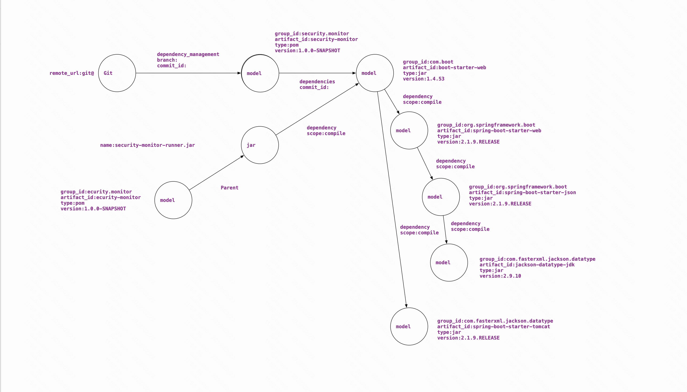
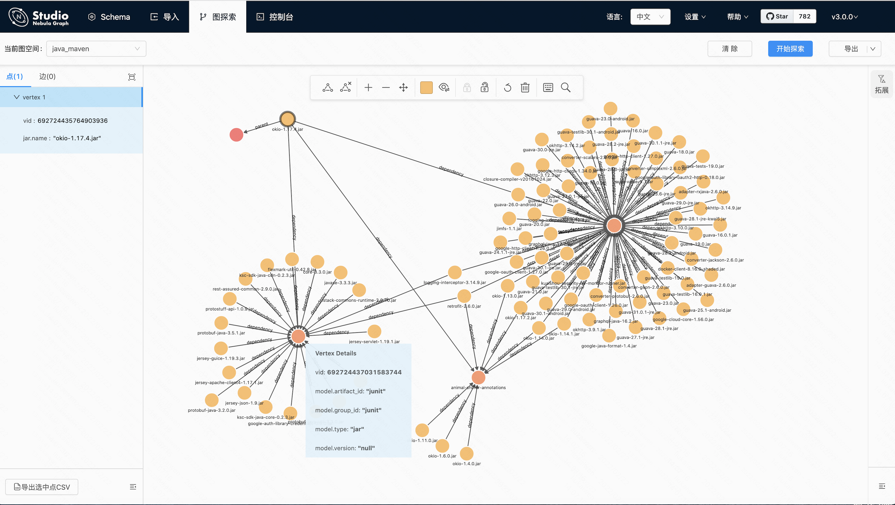
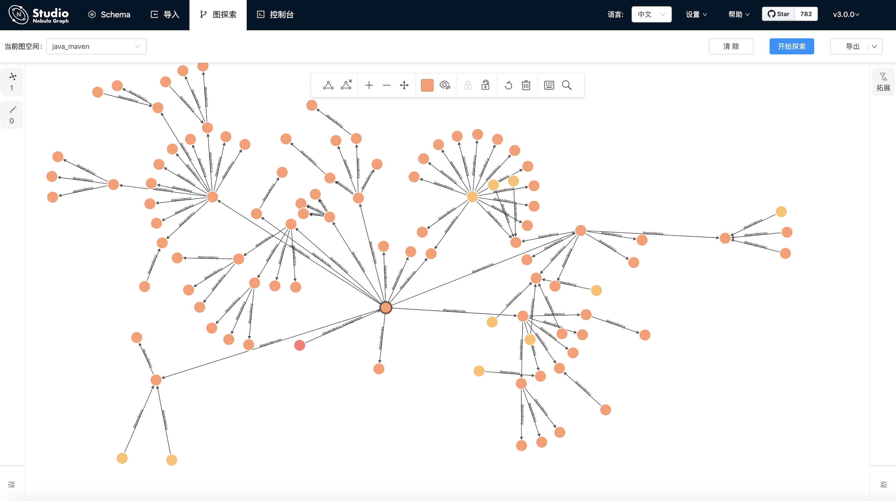

JAVA三方组建依赖分析
1 | ____ _____ ____ _ _ ____ ___ _______ __ ____ ___ __ __ _ _ _ _ _ __ ____________ |
三方组建依赖分析，依赖于nebula graph做深度索引
Introduction
系统在19年年底完成demo编写，在log4j2安全应急中发现三方组建、安全资产侧的多方面缺陷，春节期间把demo重新做部分完善。
目前主要针对java-maven做分析，三种方式
- jar
- pom.xml
- maven plugin
数据存储
- nebula
Install
kafka
- https://kafka.apache.org/downloads
- create topic
1
./bin/kafka-topics.sh --create --zookeeper localhost:2181 --replication-factor 1 --partitions 1 --topic security_sca_pom
- start kafka and zk
1
2
3
4./bin/zookeeper-server-start.sh config/zookeeper.properties
./bin/kafka-server-start.sh config/server.properties
./bin/kafka-console-consumer.sh --zookeeper localhost:2181 --topic security_sca_pom --from-beginning
./bin/kafka-console-consumer.sh --zookeeper localhost:2181 --topic security_sca_jar_pom --from-beginning
nebula
- 可视化使用:nebula-graph-studio-v3
- nebula docker:https://github.com/vesoft-inc/nebula-docker-compose.git
mvn plugin
1 | cd security-bom-analyze-maven-plugin |
architecture
service

nebula sql
- graph/maven.sql

achievement
查看jar包依赖junit.junit\animal-sniffer-annotations\jsr305

查看Git对应的依赖1
2
3
4LOOKUP ON git WHERE git.remote_url == "git@github.com:Kevin-sa/security-bom-analyze.git";
MATCH p=(v)-[e:dependencies|:dependency|:dependency_management|:parent*1]->(v2)
WHERE id(v) IN [693956652855984128]
RETURN p LIMIT 100
